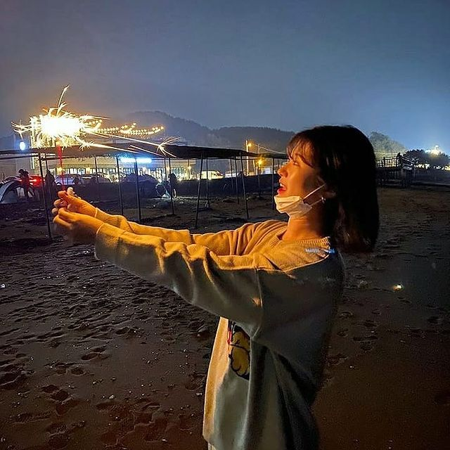

I am a person and evening type.
Because I'm taking a break from work.
I quit my old job and am learning coding.
SO.. Welcome. My name is Yunji Han.
I am 29 years eold and woman.
I like my age very much.
I'm old enough to start anything.
I've been interested in 'MBTI' lately.
My MBTI is INFP-T type.
I'm glad you're on the same wavelength as me.
And I am cute and pretty:),
but sometimes I get emotional ups and downs.
Even so, I still love myself.
나는 저녁형 인간입니다. 왜냐하면 백수라서.
오래다닌 직장 그만두고 코딩 배우고 있어요.
아무튼 환영합니다. 내 이름은 한윤지에요.
아홉수고 여자입니다. 나는 내 나이가 맘에 들어요.
어떤것을 시작해도 늦지않은 나이니까요.
요즘 MBTI에 관심이 많습니다. 나는 INFP-T타입이에요.
나랑 똑같은 유형이 있다면 반가워요.
그리고 나는 귀엽고 이뻐요.
하지만 가끔 감정기복이 심합니다.
어쨌든, 나는 내 자신을 사랑해요.